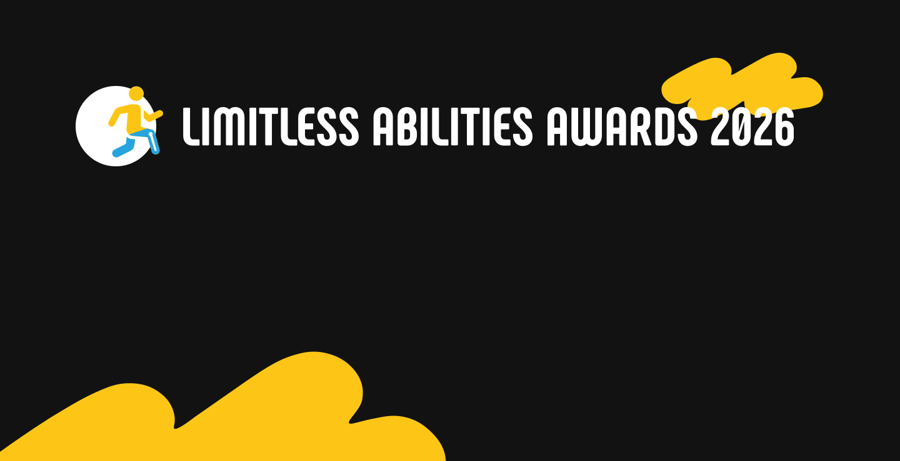

Limitless Abilities Awards 2026 is a professional award recognizing people, teams, and organizations shaping the future of prosthetics, orthotics, and rehabilitation. If your solutions, professional mastery, or daily work change people's lives — apply by August 9, 2026.
View Nominations →Limitless Abilities Awards 2026 recognizes not individual projects but a real contribution to the development of the field. Each of the nine nominations represents a different area of professional activity and recognizes people, teams, and organizations shaping today's standards of prosthetics, orthotics, and rehabilitation.
We recommend reviewing the award regulations and the nomination evaluation criteria before filling in your application.
Applications are accepted until August 9, 2026, 23:59 (Kyiv time). Choose a nomination, prepare the required materials, and fill in the form. Good luck!
View Nominations →